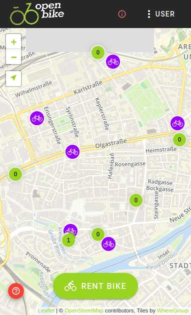
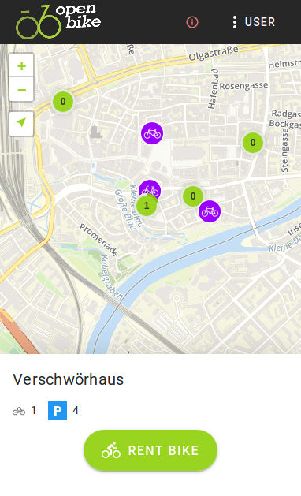
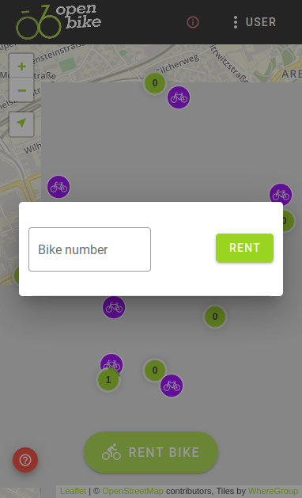
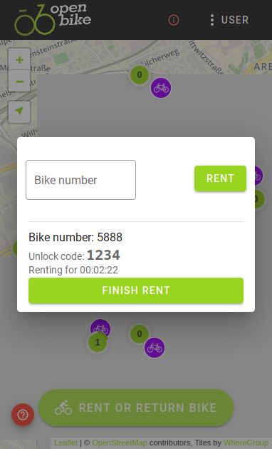

User Guide¶
You want to ride an shared bike from an OpenBike based system? That’s great! We have documentation how this usually works with a system that is installed with our instructions.
Step 1: Register¶
This step might differ between different OpenBike instances, depending on their guidelines. When visiting the website of your sharing provider, you might e.g. be required to send an email and identify yourself as eligible to use OpenBike. Alternatively, a simple login with the authentication providers chosen by the sharing provider, e.g. a social media or university account, might already be enough to use the system.
Step 2: Find a bike¶
 {kind=link}
{kind=link}
Openbike systems can implement both free-floating and station-based systems, even simultaneously.
Free-floating means that you can rent and return a bike anywhere (as long as it’s on public ground). On the OpenBike map, free-floating bikes are displayed as purple icons. By tapping on one of these icons you can obtain more information about a vehicle, e.g. if it is a normal bike or an electric one.
Station-based means that you must rent and return bikes at specific (virtual) stations defined by the provider. On the OpenBike map, stations are displayed as green circles, with a number indicating the count of bikes available. A station can be anything, from a large bike garage to a random place at the street corner. Read the station name and description by tapping on one of the stations. If you are unsure about the location of a station, contact your local bikesharing provider.
Both simultaneously means that you are encouraged to return a bike to a station, but you are not required to do so.
Warning
If you are planning to rent an e-bike, always make sure that the remaining battery range displayed in the info-view fits in with your route plans!
Note
Note that the bike location displayed on the map can deviate from the real location by up to 100 metres and more, since bikesharing trackers are often not as accurate as you know from your smartphone GPS, especially if some high buildings are around. If you can’t find a bike at the alleged location, feel free to look for it in the greater vicinity. It might, as well, be hidden behind trees or in courtyards.
Step 3: Rent a bike¶
 {kind=link}
{kind=link}
When you have found a bike, you can use the OpenBike interface to unlock it. First, ensure that your are logged in and the button Rent Bike shows up. The bike is probably labeled with a number that you can type in or has a QR-code that you can scan to achieve the same. If everything works, you should now be prompted that your rent has started.
Sharing bikes can have different lock types. In case it is a normal number lock, you are displayed an unlock key. Sometimes, bikes have automatic locks as well, which should become automatically unlocked when you start your rent using the OpenBike interface.
Note
Unfortunately, unlock mechanisms of number locks are not always self-explanatory. Look for a small button to press or a lever to raise and make sure you entered the code in the right place (often, it is marked with a small arrow or similar)
Warning
For the sake of your personal safety, we highly recommend that you inspect the bike for obvious damages and check brakes, light, etc before starting a ride.
That’s it. If you have other people with you and there are multiple bikes available, you can even submit multiple rents. Just type in the number of another bike (or scan the QR code) and confirm. Good ride and have fun!
Step 4: Return a bike¶
Make sure that you return the bike according to the guidelines of your provider, i.e. either at a station or as free-floating (see above). If returned as free-floating, make sure the bike is located at a publicly accessible spot and can easily be found. Finally, properly lock the bike and most importantly: Do not forget to finish the rent in the OpenBike interface!
Support¶
Please note that the OpenBike team does not offer user support. Please contact your local bike-sharing provider directly.